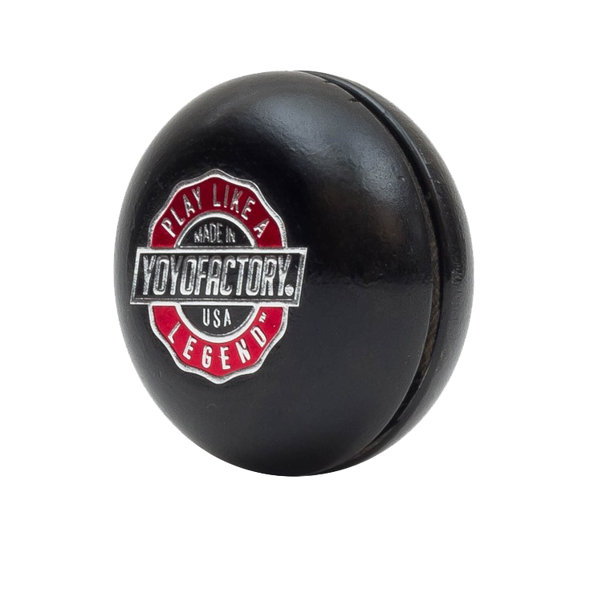
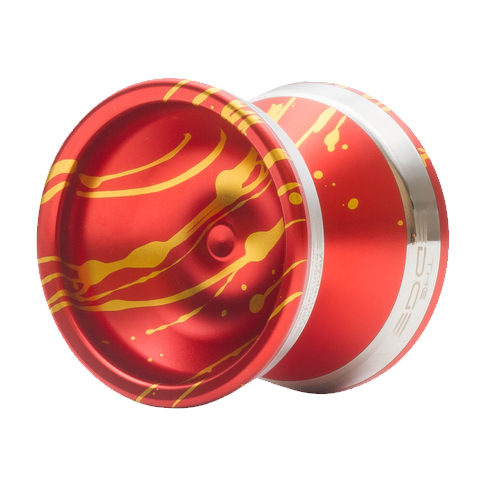

Tentang Kami
JS-Yoyo merupakan sebuah perusahaan yo-yo internasional yang telah menyediakan produk yo-yo berkualitas sejak 1989. Perusahaan kami menyediakan berbagai jenis yoyo, baik Yo-yo Basic bagi pemula hingga Yo-yo Professional bagi mereka yang sudah berpengalaman. Meskipun sudah berjalan selama kurang lebih hampir 30 tahun, kami selalu berinovasi dan selalu menjaga kualitas produk kami karena kami hanya menyediakan yang terbaik untuk anda.
Produk Kami
Basic Yo-yo
Yoyo basic merupakan yoyo dikhususkan untuk pemula, biasanya yoyo ini memiliki desain yang cukup sederhana dan menggunakan bahan yang ringan namun kuat.Dengan perputaran dan stabilitas yang cukup, Yoyo ini sangat cocok untuk memainkan trik-trik dengan tingkat kesulitan menengah.
Professional Yo-yo
Yoyo intermediate ialah yoyo bagi mereka yang sudah cukup ahli maupun bagi mereka yang ingin mempelajari trik yang lebih sulit, yoyo ini menggunakan material yang lebih kuat dan berat,serta menggunakan bearing yang lebih bagus sehingga sangat baik dalam perputaran dan keseimbangan.